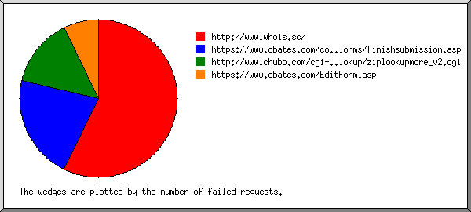
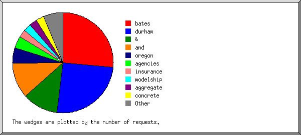
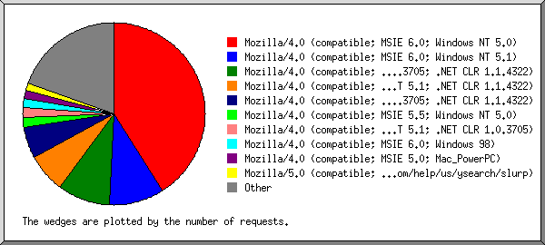
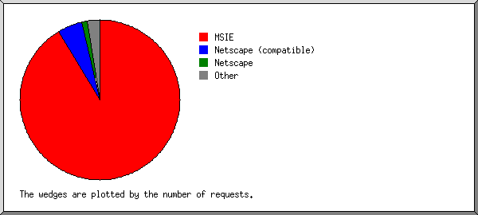
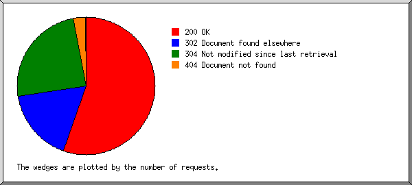
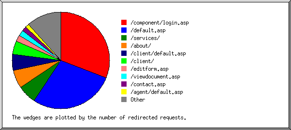
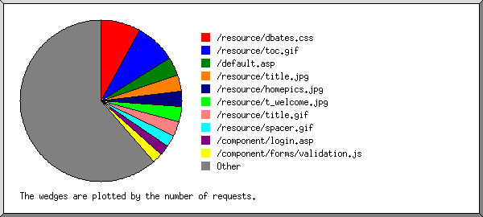

Web Server Statistics for es57045 Web Server Statistics for es57045
Web Server Statistics for es57045 Web Server Statistics for es57045(Go To: Top: General Summary: Monthly Report: Daily Summary: Hourly Summary: Failed Referrer Report: Search Word Report: Browser Report: Browser Summary: Operating System Report: Status Code Report: File Size Report: Redirection Report: Request Report)
This report contains overall statistics.
(Figures in parentheses refer to the 7-day period ending Jul 31
2004 at 11:59 PM).
Successful requests: 5,804 (1,923)
Average successful requests per day: 190 (274)
Logfile lines without status code: 105 (0)
Successful requests for pages: 2 (0)
Failed requests: 215 (52)
Redirected requests: 1,258 (358)
Distinct files requested: 167 (151)
Distinct hosts served: 323 (91)
Unwanted logfile entries: 6
Data transferred: 34.808 Mbytes (10.927 Mbytes)
Average data transferred per day: 1.141 Mbytes (1.561 Mbytes)
(Go To: Top: General Summary: Monthly Report: Daily Summary: Hourly Summary: Failed Referrer Report: Search Word Report: Browser Report: Browser Summary: Operating System Report: Status Code Report: File Size Report: Redirection Report: Request Report)
This report lists the activity in each month.
Each unit ( ) represents 1 request
for a page.
) represents 1 request
for a page.
month: #reqs: #pages: --------: -----: ------: Jul 2004: 5804: 2:Busiest month: Jul 2004 (2 requests for pages).
(Go To: Top: General Summary: Monthly Report: Daily Summary: Hourly Summary: Failed Referrer Report: Search Word Report: Browser Report: Browser Summary: Operating System Report: Status Code Report: File Size Report: Redirection Report: Request Report)
This report lists the total activity for each day of the week, summed over all the weeks in the report.
Each unit () represents 1 request
for a page.
day: #reqs: #pages: ---: -----: ------: Sun: 132: 0: Mon: 927: 0: Tue: 1708: 0: Wed: 900: 2:
(Go To: Top: General Summary: Monthly Report: Daily Summary: Hourly Summary: Failed Referrer Report: Search Word Report: Browser Report: Browser Summary: Operating System Report: Status Code Report: File Size Report: Redirection Report: Request Report)
This report lists the total activity for each hour of the day, summed over all the days in the report.
Each unit () represents 1 request
for a page.
hour: #reqs: #pages: ----: -----: ------: 0: 425: 0: 1: 156: 0: 2: 27: 0: 3: 107: 0: 4: 79: 0: 5: 19: 0: 6: 14: 0: 7: 63: 0: 8: 17: 0: 9: 23: 0: 10: 62: 0: 11: 24: 0: 12: 38: 0: 13: 46: 0: 14: 224: 0: 15: 775: 0: 16: 391: 0: 17: 412: 0: 18: 619: 0: 19: 358: 0: 20: 337: 0: 21: 813: 2:
(Go To: Top: General Summary: Monthly Report: Daily Summary: Hourly Summary: Failed Referrer Report: Search Word Report: Browser Report: Browser Summary: Operating System Report: Status Code Report: File Size Report: Redirection Report: Request Report)
This report lists the referrers containing broken links to the site.

Listing referring URLs, sorted by the number of failed requests.
#reqs: URL
-----: ---
8: http://www.whois.sc/
3: https://www.dbates.com/component/forms/finishsubmission.asp
2: http://www.chubb.com/cgi-bin/agentlookup/ziplookupmore_v2.cgi
1: https://www.dbates.com/EditForm.asp
(Go To: Top: General Summary: Monthly Report: Daily Summary: Hourly Summary: Failed Referrer Report: Search Word Report: Browser Report: Browser Summary: Operating System Report: Status Code Report: File Size Report: Redirection Report: Request Report)
This report lists which words people used in search engines to find the site.

Listing query words, sorted by the number of requests.
#reqs: search term
-----: -----------
21: bates
20: durham
9: &
9: and
4: oregon
3: agencies
2: insurance
2: modelship
2: aggregate
2: concrete
1: ship
1: www.dbates.com
1: inc
1: services
1: sailing
(Go To: Top: General Summary: Monthly Report: Daily Summary: Hourly Summary: Failed Referrer Report: Search Word Report: Browser Report: Browser Summary: Operating System Report: Status Code Report: File Size Report: Redirection Report: Request Report)
This report lists the browsers used by visitors.

Listing the top 40 browsers by the number of requests, sorted by the number of requests.
#reqs: browser
-----: -------
2378: Mozilla/4.0 (compatible; MSIE 6.0; Windows NT 5.0)
569: Mozilla/4.0 (compatible; MSIE 6.0; Windows NT 5.1)
536: Mozilla/4.0 (compatible; MSIE 6.0; Windows NT 5.1; .NET CLR 1.0.3705; .NET CLR 1.1.4322)
400: Mozilla/4.0 (compatible; MSIE 6.0; Windows NT 5.1; .NET CLR 1.1.4322)
323: Mozilla/4.0 (compatible; MSIE 6.0; Windows NT 5.1; SV1; .NET CLR 1.0.3705; .NET CLR 1.1.4322)
105: Mozilla/4.0 (compatible; MSIE 5.5; Windows NT 5.0)
101: Mozilla/4.0 (compatible; MSIE 6.0; Windows NT 5.1; .NET CLR 1.0.3705)
92: Mozilla/4.0 (compatible; MSIE 6.0; Windows 98)
88: Mozilla/4.0 (compatible; MSIE 5.0; Mac_PowerPC)
80: Mozilla/5.0 (compatible; Yahoo! Slurp; http://help.yahoo.com/help/us/ysearch/slurp)
77: Mozilla/4.0 (compatible; MSIE 6.0; Windows NT 5.0; .NET CLR 1.1.4322)
72: Mozilla/4.0 (compatible; grub-client-2.3)
59: Mozilla/4.0 (compatible; MSIE 5.01; Windows NT 5.0)
58: Mozilla/4.0 (compatible; MSIE 6.0; Windows NT 5.0; .NET CLR 1.0.3705)
58: Mozilla/4.0 compatible ZyBorg/1.0 (wn-2.zyborg@looksmart.net; http://www.WISEnutbot.com)
46: Mozilla/3.01 (compatible;)
45: Mozilla/4.0 (compatible; MSIE 6.0; Windows 98; .NET CLR 1.1.4322)
42: Mozilla/4.0 (compatible; MSIE 6.0; Windows NT 5.1; YComp 5.0.0.0; FunWebProducts; .NET CLR 1.0.3705)
41: Mozilla/4.0 (compatible; MSIE 6.0; Windows NT 5.0; Hotbar 4.1.8.0)
40: Mozilla/4.0 (compatible; MSIE 5.0; Windows 98; DigExt)
30: Mozilla/4.0 (compatible; MSIE 6.0; Windows 98; Win 9x 4.90)
30: Mozilla/4.0 (compatible; MSIE 6.0; Windows NT 5.1; Q312461; .NET CLR 1.0.3705)
27: Mozilla/4.0 (compatible; MSIE 6.0; Windows NT 5.1; .NET CLR 1.0.3705; .NET CLR 1.1.4322; Q342532)
22: Mozilla/4.0 (compatible; MSIE 6.0; Windows NT 5.1; (R1 1.5); .NET CLR 1.1.4322)
22: Mozilla/4.76 [en] (Windows NT 5.0; U)
20: Googlebot/2.1 ( http://www.google.com/bot.html)
19: Mozilla/5.0 (Windows; U; Windows NT 5.0; en-US; rv:1.5) Gecko/20031007
19: Mozilla/4.0 (compatible; MSIE 5.5; Windows NT 5.0; {2401CC73-1553-4F98-91B2-7041F0AA5B48})
18: Mozilla/4.0 (compatible; MSIE 6.0; Windows 98; FunWebProducts)
16: Googlebot/2.1 ( http://www.googlebot.com/bot.html)
16: Mozilla/4.0 (compatible; MSIE 5.5; Windows NT 5.0; T312461; IE5.5_ SP2_wOLE; .NET CLR 1.1.4322)
16: Mozilla/4.0 (compatible; grub-client-1.5.3; Crawl your own stuff with http://grub.org)
14: Mozilla/4.0 (compatible; MSIE 6.0; Windows NT 5.1; {32C984DB-3005-435D-AC63-BBD933C13B11}; .NET CLR 1.0.3705; .NET CLR 1.1.4322)
14: Mozilla/4.0 (compatible; MSIE 5.13; Mac_PowerPC)
14: Mozilla/4.0 (compatible; MSIE 5.22; Mac_PowerPC)
14: Yahoo-MMCrawler/3.x (mms dash mmcrawler dash support at yahoo dash inc dot com)
13: Mozilla/5.0 (Macintosh; U; PPC Mac OS X; en) AppleWebKit/125.2 (KHTML, like Gecko) Safari/125.8
12: ia_archiver
11: msnbot/0.11 ( http://search.msn.com/msnbot.htm)
11: Mozilla/5.0 (Macintosh; U; PPC Mac OS X; en-us) AppleWebKit/125.2 (KHTML, like Gecko) Safari/125.8
235: [not listed: 50 browsers]
(Go To: Top: General Summary: Monthly Report: Daily Summary: Hourly Summary: Failed Referrer Report: Search Word Report: Browser Report: Browser Summary: Operating System Report: Status Code Report: File Size Report: Redirection Report: Request Report)
This report lists the vendors of visitors' browsers.

Listing the top 20 browsers by the number of requests, sorted by the number of requests.
#reqs: browser
-----: -------
5305: MSIE
4917: MSIE/6
388: MSIE/5
286: Netscape (compatible)
68: Netscape
38: Mozilla/1
36: Googlebot
36: Googlebot/2
22: Netscape
22: Netscape/4
14: Yahoo-MMCrawler
14: Yahoo-MMCrawler/3
12: ia_archiver
11: msnbot
11: msnbot/0
9: MSFrontPage
9: MSFrontPage/5
9: Opera
9: Opera/7
8: oBot
5: Gigabot
5: Gigabot/1
3: TurnitinBot
3: TurnitinBot/2
3: NaverBot-1.0 (NHN Corp.
3: NaverBot-1.0 (NHN Corp. /
3: http:
3: http://www
2: MFC_Tear_Sample
2: Net Probe
1: FMS SourceBook
1: sohu-search
1: Java
1: Java/1
2: [not listed: 2 browsers]
(Go To: Top: General Summary: Monthly Report: Daily Summary: Hourly Summary: Failed Referrer Report: Search Word Report: Browser Report: Browser Summary: Operating System Report: Status Code Report: File Size Report: Redirection Report: Request Report)
This report lists the operating systems used by visitors.
Listing operating systems, sorted by the number of requests for pages.
#: #reqs: #pages: OS --: -----: ------: -- 1: 344: 2: OS unknown 2: 55: 0: Robots 3: 146: 0: Macintosh : 146: 0: Macintosh PowerPC 4: 5258: 0: Windows : 1: 0: Windows 95 : 52: 0: Unknown Windows : 2137: 0: Windows XP : 209: 0: Windows 98 : 2807: 0: Windows 2000 : 34: 0: Windows ME : 18: 0: Windows NT
(Go To: Top: General Summary: Monthly Report: Daily Summary: Hourly Summary: Failed Referrer Report: Search Word Report: Browser Report: Browser Summary: Operating System Report: Status Code Report: File Size Report: Redirection Report: Request Report)
This report lists the HTTP status codes of all requests.

Listing status codes, sorted numerically.
#reqs: status code
-----: -----------
4025: 200 OK
3: 206 Partial content
1258: 302 Document found elsewhere
1776: 304 Not modified since last retrieval
2: 401 Authentication required
209: 404 Document not found
4: 500 Internal server error
(Go To: Top: General Summary: Monthly Report: Daily Summary: Hourly Summary: Failed Referrer Report: Search Word Report: Browser Report: Browser Summary: Operating System Report: Status Code Report: File Size Report: Redirection Report: Request Report)
This report lists the sizes of files.
size: #reqs: %bytes:
-----------: -----: ------:
0: 1318: :
1b- 10b: 0: :
11b- 100b: 0: :
101b- 1kb: 1839: 1.39%:
1kb- 10kb: 1752: 12.55%:
10kb-100kb: 894: 85.69%:
100kb- 1Mb: 1: 0.38%:
(Go To: Top: General Summary: Monthly Report: Daily Summary: Hourly Summary: Failed Referrer Report: Search Word Report: Browser Report: Browser Summary: Operating System Report: Status Code Report: File Size Report: Redirection Report: Request Report)
This report lists the files that caused requests to be redirected to another file. (Usually directories with the final slash missing, or CGI scripts that forced redirections.)

Listing the top 30 files by the number of redirected requests, sorted by the number of redirected requests.
#reqs: file
-----: ----
389: /component/login.asp
355: /default.asp
79: /services/
78: /about/
67: /client/default.asp
57: /client/
27: /editform.asp
24: /viewdocument.asp
13: /viewdocument.asp?ID=QEBPEDBU
10: /viewdocument.asp?ID=TBBLGBSX
20: /contact.asp
16: /agent/default.asp
15: /about/news.asp
14: /focus/mvrreg/default.asp
12: /focus/mvrreg/mvrreg0.asp
11: /customer.asp
9: /privacy.asp
9: /directry.asp
9: /loadform.asp
8: /events.asp
7: /focus/euse/euse1.asp
6: /links.asp
6: /sitemap.asp
6: /risk101.asp
5: /component/forms/addattachments.aspx
5: /focus/euse/default.asp
4: /focus/euse/
3: /focus/mvrreg/
3: /forms.asp
2: /client/loadprintform.asp
1: /services/tech/default.asp
1: /focus/mvrreg/mvrreg2.asp
10: [not listed: 10 files]
(Go To: Top: General Summary: Monthly Report: Daily Summary: Hourly Summary: Failed Referrer Report: Search Word Report: Browser Report: Browser Summary: Operating System Report: Status Code Report: File Size Report: Redirection Report: Request Report)
This report lists the files on the site.

Listing files with at least 20 requests, sorted by the number of requests.
#reqs: %bytes: last time: file -----: ------: ------------------: ---- 472: 1.14%: Jul/30/04 10:54 PM: /resource/dbates.css 472: 7.68%: Jul/30/04 10:54 PM: /resource/toc.gif 215: : Jul/31/04 6:44 PM: /default.asp 190: 6.86%: Jul/30/04 8:30 PM: /resource/title.jpg 175: 11.74%: Jul/30/04 10:54 PM: /resource/homepics.jpg 174: 0.71%: Jul/30/04 10:54 PM: /resource/t_welcome.jpg 172: 1.53%: Jul/30/04 10:54 PM: /resource/title.gif 131: 0.21%: Jul/30/04 7:50 PM: /resource/spacer.gif 120: 0.01%: Jul/31/04 1:35 AM: /component/login.asp 119: 0.21%: Jul/29/04 6:56 PM: /component/forms/validation.js 110: 0.19%: Jul/30/04 7:40 PM: /client/document/resource/client.css 107: 12.46%: Jul/30/04 5:28 PM: /resource/about.jpg 102: : Jul/30/04 7:50 PM: /contact.asp 101: 0.31%: Jul/30/04 5:28 PM: /resource/t_about.jpg 101: 0.20%: Jul/30/04 5:28 PM: /resource/x_master.jpg 88: 16.38%: Jul/30/04 7:50 PM: /resource/contacttx.jpg 87: 0.24%: Jul/29/04 10:26 PM: /resource/dialc.jpg 82: : Jul/30/04 7:34 PM: /about/default.asp 81: : Jul/30/04 7:33 PM: /services/default.asp 80: 6.75%: Jul/30/04 7:51 PM: /directry.asp 79: 0.19%: Jul/29/04 10:26 PM: /resource/dialp.jpg 76: 0.42%: Jul/30/04 7:50 PM: /resource/t_contact.jpg 74: 0.19%: Jul/29/04 10:26 PM: /resource/dialn.jpg 72: 0.81%: Jul/27/04 4:23 PM: /component/forms/finishsubmission.asp 13: 0.11%: Jul/ 9/04 6:50 PM: /component/forms/finishsubmission.asp?step=2&task=0 57: 0.11%: Jul/27/04 4:21 PM: /component/forms/form.css 54: 9.02%: Jul/30/04 7:33 PM: /resource/services.gif 54: 0.06%: Jul/27/04 4:21 PM: /resource/spacerline.gif 53: 1.74%: Jul/30/04 5:28 PM: /resource/abouttx.jpg 53: 4.29%: Jul/28/04 9:56 PM: /resource/clines.jpg 51: 0.27%: Jul/28/04 9:56 PM: /resource/t_clines.jpg 39: : Jul/30/04 7:34 PM: /customer.asp 38: 0.11%: Jul/29/04 7:35 PM: /agent/document/resource/agent.css 38: : Jul/30/04 7:34 PM: /sitemap.asp 37: 0.06%: Jul/30/04 7:40 PM: /client/document/resource/dotdoc.gif 37: 0.06%: Jul/30/04 7:40 PM: /client/resource/serviceteam.gif 37: 0.10%: Jul/30/04 7:40 PM: /client/selectaccounts/logo.gif 37: 0.07%: Jul/30/04 7:40 PM: /client/resource/dbhome.gif 37: 0.04%: Jul/30/04 7:40 PM: /client/resource/forms.gif 37: 0.04%: Jul/30/04 7:40 PM: /client/resource/leftlinks.gif 37: 0.29%: Jul/30/04 7:40 PM: /client/select.asp 37: 0.10%: Jul/30/04 7:40 PM: /client/resource/title.gif 37: 0.04%: Jul/30/04 7:40 PM: /client/resource/divider.gif 35: 0.11%: Jul/30/04 5:28 PM: /resource/dotdoc.jpg 35: 0.27%: Jul/30/04 5:28 PM: /resource/t_resource.jpg 32: : Jul/28/04 9:56 PM: /services/clines0.asp 31: 0.15%: Jul/30/04 7:34 PM: /resource/t_sitemap.jpg 30: : Jul/30/04 7:34 PM: /events.asp 30: 0.44%: Jul/27/04 4:21 PM: /editform.asp 30: : Jul/30/04 9:26 AM: /services/prof0.asp 28: 1.58%: Jul/28/04 8:42 PM: /resource/prof.jpg 27: : Jul/29/04 10:27 PM: /risk101.asp 26: 0.14%: Jul/29/04 10:26 PM: /resource/special.jpg 26: 0.02%: Jul/30/04 7:40 PM: /signin.asp 26: : Jul/30/04 2:48 PM: /about/begin.asp 26: 0.19%: Jul/30/04 7:34 PM: /resource/t_events.jpg 26: 0.07%: Jul/28/04 8:42 PM: /resource/t_prof.jpg 24: : Jul/29/04 9:06 PM: /about/history.asp 24: : Jul/28/04 9:56 PM: /services/clines_r.asp 24: 0.08%: Jul/28/04 9:56 PM: /resource/b_clines.jpg 24: 0.30%: Jul/27/04 4:21 PM: /loadform.asp 13: 0.18%: Jul/27/04 4:14 PM: /loadform.asp?ID=7666-264-925-12 11: 0.13%: Jul/27/04 4:21 PM: /loadform.asp?ID=7666-264-925-10 23: 0.14%: Jul/28/04 9:56 PM: /resource/reprsent.jpg 23: 0.12%: Jul/30/04 7:40 PM: /resource/linetab.gif 23: 0.14%: Jul/30/04 7:40 PM: /resource/logon.gif 23: : Jul/29/04 10:28 PM: /about/ships.asp 23: 0.11%: Jul/29/04 10:27 PM: /resource/t_risk101.gif 22: : Jul/28/04 9:56 PM: /services/clines_s.asp 21: : Jul/30/04 8:30 PM: /links.asp 20: 0.14%: Jul/29/04 7:35 PM: /agent/signin.asp 20: : Jul/29/04 9:06 PM: /about/news.asp 852: 11.36%: Jul/31/04 5:03 PM: [not listed: 86 files]
(Go To: Top: General Summary: Monthly Report: Daily Summary: Hourly Summary: Failed Referrer Report: Search Word Report: Browser Report: Browser Summary: Operating System Report: Status Code Report: File Size Report: Redirection Report: Request Report)